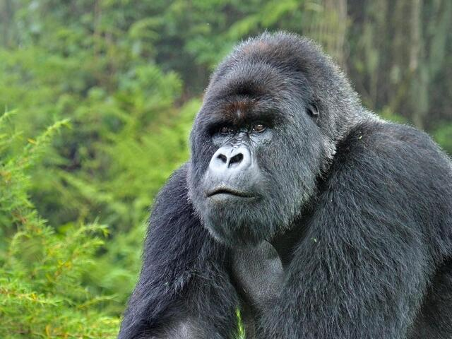
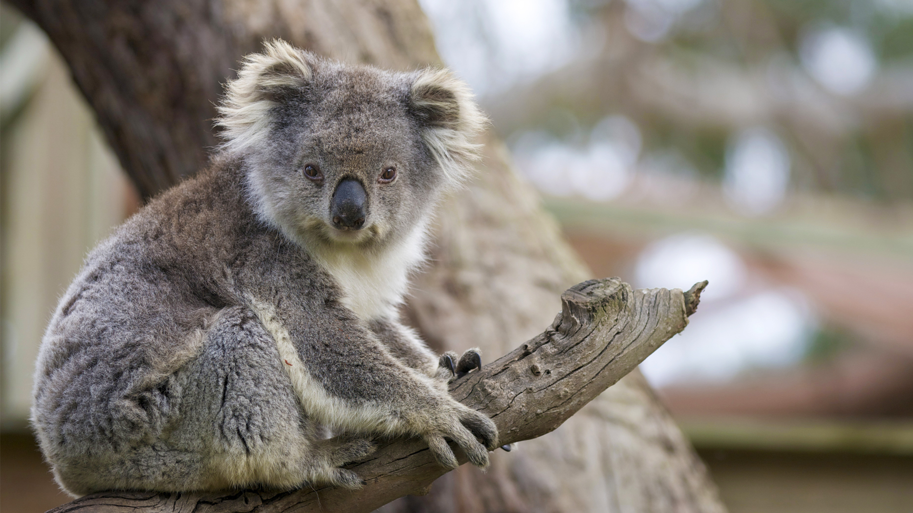

Chat about our gorgeous friends.

Julie (on the left, 5 years old female) and Jasper (on the right, 7 years old male) are a bonded pair of Equus quagga or plains zebras who have been with us for three years. They like each other more than they like anyone else and sometimes we can hear them snorting at us, so we are pretty sure they have inside jokes about everyone in the garden. They make plenty of other noises and are very active. Something about them that seems odd to visitors is that they sleep standing, but that is normal for equine species! Although Julie seems a bit whiter, we can confirm zebras are black with white stripes as their skin is black and only the hair is white. We haven't been blessed with babies from this pair yet, but we are hopeful we will one day

Captain is our only Giraffa camelopardalis specimen. He is a 2 and a half years old male. As the tallest terrestrial animal and the largest ruminant, he mainly eats leaves, fruits and flowers of woody plants. Generally, a carefree youngster, he has been found to have preferences over headresses and headgear. Captain likes to see people's faces, he knocks off their caps and hats and sometimes tries to do the same with bangs. We appreciate the big goofball and hope to see more of his quirqs as he grows older.

This is Chilli

Sandy is one of the felines here and part of the Leptailurus serval species. At 20 months old she is one of our youngest residents. Although people have tried to keep them as pets, servals need lots of stimulation and space to spend their energy, otherwise they can appear distructive to the home. Servals can jump up to 2 meters high and establish ranges between 10 and 30 km^2. As all felines, servals are carnivores and they prey on rats, birds, insects and reptiles using their keen hearing. Sandy is a very skilled escape artist and will often try to con people into thinking she has not been fed yet.

Chomper is a lovely Procyon lotor. A very spolied one even. Raccoons are omnivorous animals and their proclivity to find food around humans has earned them the nickname of trash pandas. That is far from the truth for Chomper, who could be a successful restaurant critic with his refined tastes. He prefers working on puzzle toys with fruits inside rather than gobbling down meat. At 7 years old, he is still energetic, healthy and we are looking forward to the days when we will find the meal this picky eater will rate with 5 stars.
Malcolm is our resident canis lupus and the sole survivor of his pack. Malcom's parents and siblings have been victims of poaching which is the second cause of the decline in their numbers after loss of habitat due to human development. There are still many misconceptions circulating about wolves and education seems to be more difficult than spreading misinformation. Wolfs are rarely solitary, they thrive in packs. The leaders of the pack are generally the parents who care and dote on their pups. There are complex relations in a pack and each of them is responsible to protect and educate the younger members. Wolves show personality traits such as, but not limited to, playful behaviour, demanding attitudes and attention seeking. We are looking into finding a partner for Malcolm and hoping more of his traits will shine through

At 27 years old, Grease is among the seniors of our establishment, he has been with us from the begining and is a gorgeous Gorilla gorilla specimen. This distinguished gentleman is not particularly interested in humans, but enjoys the company of other animals here Gorillas are close relatives of humans, sharing more than 90% of the DNA with us. They are also the largest primates in the world and tend to live in troops lead by a male called a silverback.
Spencer is our young Panthera tigris tigris male. He is a laid back fellow with toe beans for days and a very boopable bose when he is in the mood for it. Although white bengal tigers are very popular around the world, their staggering number is not a natural occurence, but a result of inbreeding. As beautiful as they are, this iresponsible behavior has led to these majestic animals having to deal with a lot more health problems than the orange tigers. The most often occuring issue is strabism and then there are shortened tendons of the forelegs, club foot, kidney problems, arched or crooked backbone. Starting with 2011, The Association of Zoos and Aquariums adopted a policy against breeding animals to have a certain appearance. This decision should help preserve genetic diversity and avoid genetic defects.

This is Kapcha
This is Farrow